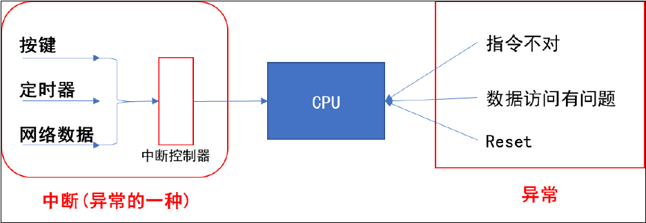
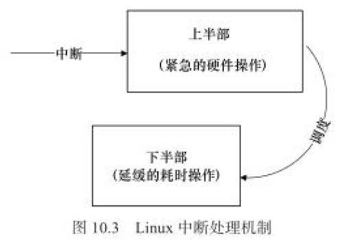

异常与中断的概念与处理流程

- 中断源
- 中断控制器
- CPU
arm对异常(中断)处理过程：
-
初始化：
- 设置中断源
- 设置中断控制器
- 设置CPU总开关（使能中断）
-
执行其他程序
-
产生中断：比如按下按键 --> 中断控制器 --> CPU
-
CPU每执行完一条指令都会检查有无中断/异常产生
-
CPU发现由中断/异常产生，开始处理。
对于不同的异常，跳去不同的地址执行程序。该地址只有一条跳转指令，跳去执行某个函数（地址），这个就是异常向量。
异常向量表包含了一组异常处理程序的入口地址，每个异常/中断对应一个地址。当中断发生时，处理器会从异常向量表中找到相应的地址并跳转到那里执行。
-
跳转的函数执行：
- 保存现场：各种寄存器
- 处理异常/中断：分辨中断源，再调用不同的处理函数。
- 恢复现场
注意：上面的3，4，5都是硬件做的。
Linux中断程序架构
中断处理原则
- 中断不能嵌套
- 中断处理时间越快越好
但是由于中断处理程序通常比较耗时，Linux将中断处理程序分别两个半部：上半部和下半部

-
上半部用于完成尽量少的比较紧急的任务。（通常被设计为不可被新的中断打断）
通常只是简单读取寄存器的中断状态，并在清除中断标志位后进行“登记中断“的工作，”登记中断“意味着将底半部处理程序挂到该设备的底半部执行队列中去。
-
底半部几乎做了中断处理程序的所有事情。（通常被设计为可以被新的中断打断）
Linux中断编程
在Linux设备驱动中，使用中断的设备需要申请和释放对应的中断，并分别使用内核提供的request_irq()和free_irq()